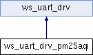

Class that provides an interface for a PM25 AQI UART sensor. More...
#include <ws_uart_drv_pm25aqi.h>
Inheritance diagram for ws_uart_drv_pm25aqi:

Public Member Functions | |
| ws_uart_drv_pm25aqi (HardwareSerial *hwSerial, int32_t interval) | |
| Initializes the PM25AQI UART device driver. More... | |
| ~ws_uart_drv_pm25aqi () | |
| Destructor for a PM25AQI sensor. | |
| bool | begin () override |
| Initializes a PM25AQI sensor. More... | |
| bool | read_data () override |
| Attempts to read data from the PM25AQI sensor. More... | |
| void | send_data () override |
| Packs and sends the device's event data to Adafruit IO. | |
 Public Member Functions inherited from ws_uart_drv Public Member Functions inherited from ws_uart_drv | |
| ws_uart_drv (HardwareSerial *hwSerial, int32_t interval) | |
| Initializes a UART device driver. More... | |
| bool | isReady () |
| Checks if the UART device is ready to be polled at its time interval. More... | |
| void | setPrvPollTime (unsigned long curTime) |
| Sets the last time a UART device driver was polled. More... | |
| const char * | getDriverID () |
| Gets the UART device's unique identifier. More... | |
| void | setDriverID (const char *id) |
| Sets the UART driver's identifer. More... | |
| virtual void | set_mqtt_client (Adafruit_MQTT *AMQTT, const char *mqtt_topic) |
| Provides the UART device driver with an instance of the application's MQTT configuration. More... | |
| void | packUARTResponse (wippersnapper_signal_v1_UARTResponse *msgUARTResponse, int event_index, wippersnapper_i2c_v1_SensorType sensor_type, float sensor_value) |
| Packs the UART device's data into a UARTResponse message. More... | |
Protected Attributes | |
| Adafruit_PM25AQI * | _aqi = nullptr |
| Pointer to PM25AQI sensor object. | |
| PM25_AQI_Data | _data |
| PM25AQI sensor data struct. | |
| HardwareSerial * | _hwSerial = nullptr |
| Pointer to Hardware UART interface. | |
Additional Inherited Members | |
| Public Attributes inherited from ws_uart_drv | |
| const char * | uartTopic = nullptr |
| UART device's MQTT topic. | |
| Adafruit_MQTT * | mqttClient = nullptr |
| Pointer to MQTT client object. | |
| unsigned long | pollingInterval |
| UART device's polling interval, in milliseconds. | |
Detailed Description
Class that provides an interface for a PM25 AQI UART sensor.
Constructor & Destructor Documentation
◆ ws_uart_drv_pm25aqi()
|
inline |
Initializes the PM25AQI UART device driver.
- Parameters
-
hwSerial Pointer to an instance of a HardwareSerial object. interval How often the PM25AQI device will be polled, in milliseconds.
Member Function Documentation
◆ begin()
|
inlineoverridevirtual |
Initializes a PM25AQI sensor.
- Returns
- True if the PM25AQI sensor was successfully initialized, False otherwise.
Reimplemented from ws_uart_drv.
◆ read_data()
|
inlineoverridevirtual |
Attempts to read data from the PM25AQI sensor.
- Returns
- True if data was successfully read, False otherwise.
Reimplemented from ws_uart_drv.
The documentation for this class was generated from the following file:
- src/components/uart/drivers/ws_uart_drv_pm25aqi.h